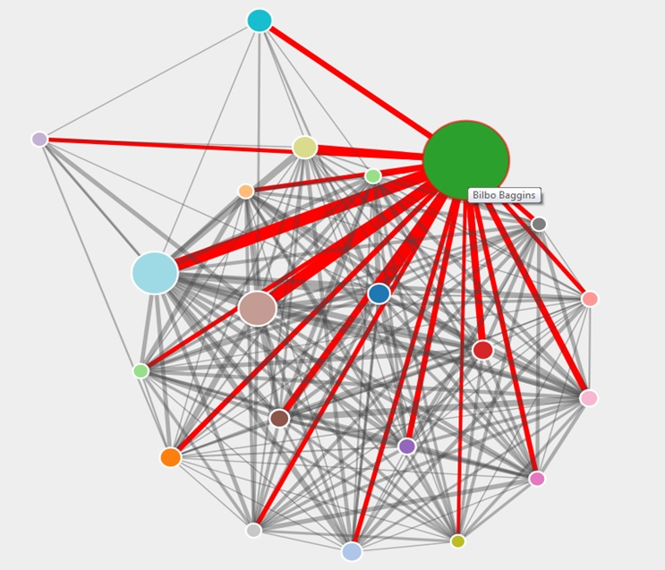
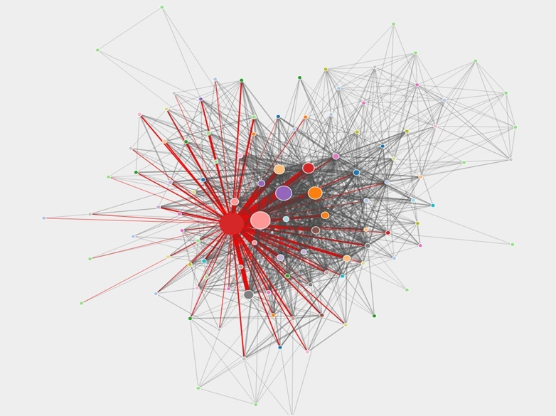

Assignment 4: Basic Github page
Name: Pepijn Roos, Professor: Dr.P.A. Vierthaler, Date of submission: 20-04-2018
Text visualization is an increasingly used method for analyzing different concepts and phenomena in texts. Encouraged by open data initiatives, crowdfunding and collaboration, academics and amateurs have created numerous ways of text visualization techniques. In the first part of this small project draft attention is given to one example of single-text visualization: character co-occurrence in the Lord of the Rings Project (LotrProject). What techniques are used and how is textual information transmitted to the viewer? The second part discusses how these techniques can be used when focusing on detective literature, in particular Edgar Allen Poe's The Murder in the Rue Morgue (1841), The Mystery of Marie Roget (1842), The Purloined Letter (1844), Wilkie Collins’s The Moonstone (1868), Arthur Conan Doyle's A Study in Scarlet (1887) and Agatha Christie's The Mysterious Affair at Styles (1920).
Which project did inspire this draft? In 2012 the LotrProject was created by chemical engineer Emil Johannson. His fascination for Tolkien’s mythical works inspired him to create multiple datasets and visualizations. Non-profit and crowdfunded, Johannson proves that amateur fans can create and use interesting techniques. A specific part of the project is dedicated to character co-occurrence: the amount of times characters are mentioned on the same page. Figures 2 and 3 show examples of the Hobbit and the Lotr. The size of the nodes indicates the total amount of mentions of one character. In the Hobbit Bilbo Baggins is obviously the protagonist. The thickness of the edges indicates the amount of times two characters are mentioned on the same page. Using this crude method, relations and parallels can be discovered between (clusters) of characters. There are some drawbacks however. First, selection by page (and not by chapter) is very arbitrary. Second, characters may be mentioned on the same page, but this does not mean that they interact. Third, we do not know in what setting characters are mentioned: do characters speak about each other or do they speak themselves?
Disregarding the drawbacks, this visualization technique could be useful when analyzing detectives like The Moonstone. Collins pretends multiple characters have contributed to the story of the Moonstone. Can we discern any general patterns and interesting character interaction when we analyze the text by page or chapter (and not by ‘contributor’)? After creating a visualization, in-depth research should be conducted: What does the visualization tell us? What kind of interaction could be discerned? Should the inquiry be refined?
When comparing multiple single-text visualizations, interesting results could be shown. Detectives tend to be build up by certain standard features. Besides the clever and sometimes mysterious detective, there is a narrator, who often seems to be a 'semi-ignorant' observer. The police and customs are often represented as a foolish party, They make terrible mistakes, while suspecting innocent people. Finally the plot is filled with specific characters: some are there to mislead the reader, others provide hints. It would be interesting to label characters by the above mentioned features.
By adding these tags, the visualization could be even more interesting. How are the texts structured? Do the police interact more directly with the detective in, let's say The Mysterious Affair at Styles or in A Study in Scarlet? How are 'misleading' characters related to 'helpful' characters in each work? Character co-occurrence is one perspective which should be able to answer these questions.
What steps should be taken to write a successful essay? First of all, all the selected corpus should be thoroughly read. On this point, I still have to read The Mysterious Affair at Styles. Besides that, more (amateur) projects and their methodology should be traced. What can I learn from these projects and how am I going to adapt their methodology? Of course this should be linked to academic writing which is linked to digital humanities, detective literature and network analysis. In the second phase, a Python code should be written to parse, clean and structure the text. Ultimately, the code should produce a list of characters which co-occur in certain text elements. In the final phase, a network visualization tool should be used to present my findings. Gephi might be able to produce a range of satisfying visualizations. Perhaps there are other tools, but they should still be traced by the author of this draft project.
This set-up lays the foundation for an interesting project. Could the techniques used by Johannson also be applied to detective literature? The tools will show! Figure 1 shows a table with all deadlines.
================================Sources==================================
- Christie, A., The Mysterious Affair at Styles (1920).
- Collins, W., The Moonstone, Wordsworth Editions Limited (Ware 1993).
- Doyle, A.C., A Study in Scarlet (1886).
- Johansson, E., The LotrProject (As seen on 02-03-2018):
- About the Project: http://lotrproject.com/about/
- Character co-occurrence in the Hobbit: http://lotrproject.com/statistics/books/cooccurrences?view=hobbit
- Character co-occurence in the Lord of the Rings: http://lotrproject.com/statistics/books/cooccurrences?view=lotr
- Tedx Talk, ‘Pursuing your geeky project’, https://www.youtube.com/watch?v=k0T6rfpYoqA.
- Nualart, J., M. Pérez - Montoro and M. Whitelaw, ‘How we draw texts: A review of approaches to text visualization and exploration’, Profesional De La Información, 23:3 (2014) 221-235.
- Poe, E.A., The Murder in Rue Morgue (1841).
- Poe, E.A, The Mystery of Marie Roget (1842).
- Poe, E.A., The Purloined Letter (1844).
================================Annex======================================

Figure 1. Character co-occurrence in the Hobbit. Source: http://lotrproject.com/statistics/books/cooccurrences?view=hobbit, as seen on 02-03-2018

Figure 2: Character co-occurrence in the Lord of the Rings. Source:http://lotrproject.com/statistics/books/cooccurrences?view=lotr, as seen on 02-03-2018.